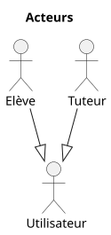
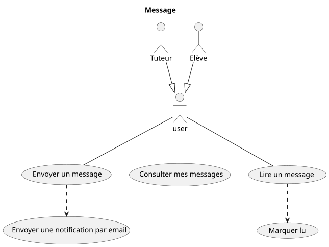
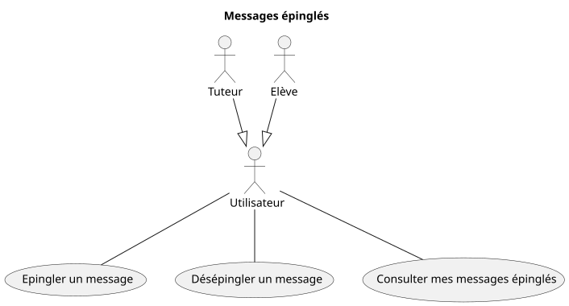
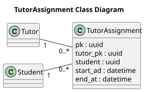
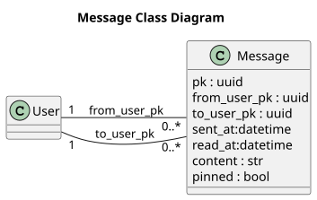
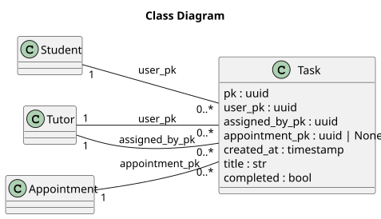
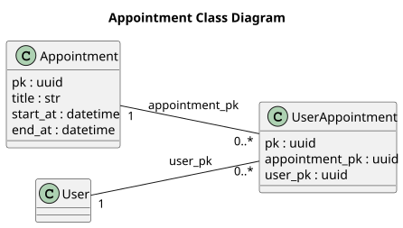

Cahier des charges
Contexte
HomeSkolar est une association de soutien scolaire d'élèves en difficulté avec des tuteurs bénévoles. L'association souhaite un nouveau site web offrant diverses fonctionnalités aux utilisateurs -élèves ou tuteur- afin d'assurer efficacement le soutien scolaire.
Objectif
Ce cahier des charges s'évertue à identifier clairement les acteurs, besoins, descriptions fonctionnelles et techniques du projet afin de répondre au mieux aux attentes du client.
Parties prenantes
- HomeSkolar: client demandeur.
- CodeIguanas: développeur de la solution.
Effectifs sur le projet
- 2 développeurs spécialisés frontend
- 2 développeurs spécialisés backend
Tous sont dûment formés aux technologies actuelles sur le marché.
Acteurs identifiés :

Visiteur :
Utilisateur anonyme non authentifié et / ou n'ayant pas de compte.
N'a accès à aucune page sécurisée.
Peut s'inscrire ou se connecter.
Tuteur :
Utilisateur inscrit et authentifié pour fournir un soutien scolaire aux élèves.
- Suit un ou plusieurs élèves
- Planifie les rendez-vous avec les élèves
- Assigne une ou plusieurs tâches à l'élève entre chaque rendez-vous
Elève :
Utilisateur inscrit et authentifié pour obtenir un soutien scolaire.
- Est assigné à un tuteur
- Assiste aux rendez-vous planifiés
- Réalise les tâches assignées par le tuteur
Utilisateur :
Utilisateur authentifié au sens large, élève ou tuteur.
- Envoi / reçoit des messages
- Gère ses tâches personnelles
Hors périmètre initial
Administrateur :
Cet utilisateur est identifié comme potentiel besoin, mais ne fait pas partie des demandes initiales. Il peut être ajouté dans de futures mises à jour avec ses fonctionnalités propres.
Utilisateur système ayant des droits étendus.
- Gère des demandes / problématiques utilisateurs
- Valide les rôles de tuteurs / élèves lors de l'inscription
Spécifications fonctionnelles
Domaine : Compte utilisateur
Gestion de l'authentification

Gestion des données personnelles

Fonctionnalité: M'inscrire
En tant que visiteur
Je veux créer un nouveau compte
Afin d'accéder aux fonctionnalités du site
Scénario: Inscription avec des données valides
Etant donné que je suis sur le formulaire d'inscription
Et que je ne possède pas déjà un compte
Et que j'ai renseigné tous les champs obligatoires avec des données valides
Lorsque je valide le formulaire
Alors l'inscription est validée
Et mon compte est créé
Et je suis invité à me connecter
Scénario: Refus avec des données obligatoires manquantes
Etant donné que je suis sur le formulaire d'inscription
Mais que j'ai partiellement renseigné les champs obligatoires avec des données valides
Lorsque je valide le formulaire
Alors l'inscription est refusée
Et les données manquantes sont mises en valeur
Et je suis invité à compléter les données manquantes
Scénario: Refus avec des données au mauvais format
Etant donné que je suis sur le formulaire d'inscription
Lorsque je saisis des données dans un format invalide
Alors le formulaire met la donnée en valeur
Et le format attendu m'est spécifié
Scénario: Refus avec une adresse email déjà existante
Etant donné que je suis sur le formulaire d'inscription
Et que j'ai renseigné tous les champs obligatoires avec des données valides
Mais qu'un compte avec la même adresse email existe déjà
Lorsque je valide le formulaire complété
Alors l'inscription est refusée
Et je suis informé que l'adresse email est déjà utilisée
Et je suis invité à me connecter au lieu de créer un nouveau compte
Fonctionnalité: Me connecter à mon espace personnel
En tant qu'utilisateur déconnecté
Je veux me connecter à mon espace personnel
Afin d'accéder à mon espace personnel
Et aux fonctionnalités du site
Scénario: Connexion avec des identifiants valides
Etant donné que je suis sur la page de connexion
Et que j'ai complété le formulaire de connexion
Et que mon adresse email et mot de passe sont valides
Lorsque je valide le formulaire de connexion
Alors la connexion est autorisée
Et j'accède à mon espace personnel
Scénario: Refus avec identifiants invalides
Etant donné que je suis sur la page de connexion
Et que j'ai complété le formulaire de connexion
Mais que mon adresse email et / ou mot de passe sont invalides
Lorsque je valide le formulaire de connexion
Alors la connexion est refusée
Et je suis informé que mes identifiants sont invalides
Et je suis invité à réessayer
Scénario: Refus avec des identifiants incomplets
Etant donné que je suis sur la page de connexion
Mais que j'ai partiellement complété le formulaire de connexion
Lorsque je valide le formulaire de connexion
Alors la connexion est refusée
Et je suis informé que le champ manquant est obligatoire
Fonctionnalité: Me déconnecter de mon espace personnel
En tant qu'utilisateur connecté à mon espace personnel
Je veux me déconnecter
Afin de mettre fin à ma session
Scénario: Déconnexion
Etant donné que je suis connecté à mon espace personnel
Lorsque je clique sur "Se déconnecter"
Alors je suis déconnecté
Et un message confirme la déconnexion
Et je n'ai plus accès à mon espace personnel
Fonctionnalité: Mettre à jour mon mot de passe
En tant qu'utilisateur connecté à mon espace personnel
Je veux mettre à jour mon mot de passe
Afin de le renouveler par sécurité
Scénario: Modification de mot de passe
Etant donné que j'ai ouvert le formulaire de modification de mot de passe
Et que j'ai saisi le nouveau mot de passe
Et que j'ai confirmé le nouveau mot de passe
Et que j'ai saisi mon mot de passe actuel
Lorsque je valide le formulaire
Alors le mot de passe est mis à jour
Et un message m'informe que le mot de passe est mis à jour
Et je suis déconnecté
Et je suis invité à me reconnecter
Scénario: Refus lorsque le mot de passe actuel est incorrect
Etant donné que j'ai ouvert le formulaire de modification de mot de passe
Et que j'ai saisi le nouveau mot de passe
Et que j'ai confirmé le nouveau mot de passe
Mais que j'ai saisi un mot de passe actuel incorrect
Lorsque je valide le formulaire
Alors le mot de passe n'est pas mis à jour
Et je suis informé que le mot de passe actuel est incorrect
Scénario: Refus lorsque le mot de passe actuel est manquant
Etant donné que j'ai ouvert le formulaire de modification de mot de passe
Et que j'ai saisi le nouveau mot de passe
Et que j'ai confirmé le nouveau mot de passe
Mais que je n'ai pas saisi le mot de passe actuel dans le champ requis
Lorsque je valide le formulaire
Alors le mot de passe n'est pas mis à jour
Et je suis informé que ce champ est obligatoire
Scénario: Refus lorsque le nouveau mot de passe ne correspond pas à la confirmation
Etant donné que j'ai ouvert le formulaire de modification de mot de passe
Et que j'ai saisi mon mot de passe actuel
Et que j'ai saisi le nouveau mot de passe "test_mdp"
Mais que j'ai confirmé le nouveau mot de passe "test_mdpppp"
Lorsque je valide le formulaire
Alors le mot de passe n'est pas mis à jour
Et je suis informé que le nouveau mot de passe ne correspond pas à la confirmation
Scénario: Refus lorsque la confirmation de mot de passe est manquante
Etant donné que j'ai ouvert le formulaire de modification de mot de passe
Et que j'ai saisi mon mot de passe actuel
Et que j'ai saisi le nouveau mot de passe
Mais que je n'ai pas confirmé le nouveau mot de passe
Lorsque je valide le formulaire
Alors le mot de passe n'est pas mis à jour
Et je suis informé qu'il faut confirmer le nouveau mot de passe
Fonctionnalité: Mettre à jour mes données personnelles
En tant qu'utilisateur connecté à mon espace personnel
Je veux modifier mes données personnelles
Afin de refléter les changements de mes coordonnées
Scénario: Mettre à jour mes données personnelles avec des données valides
Etant donné que je suis sur le formulaire de mes données personnelles
Et que j'ai saisi des données valides à modifier
Lorsque je valide le formulaire
Alors les données sont modifiées
Et j'ai un message de confirmation
Et je suis redirigé vers mes données personnelles
Scénario: Refus lorsque l'adresse email est invalide
Etant donné que je suis sur le formulaire de mes données personnelles
Et que j'ai saisi une nouvelle adresse email
Mais que le format de l'adresse est invalide
Lorsque je valide le formulaire
Alors les données ne sont pas modifiées
Et je suis informé que le format de l'adresse n'est pas valide
Fonctionnalité: Réinitialiser mon mot de passe
En tant qu'utilisateur déconnecté de mon espace personnel
Je veux réinitialiser le mot de passe que j'ai oublié
Afin de pouvoir en définir un nouveau, pour me connecter à mon espace personnel
Scénario: Réinitialiser mon mot de passe avec une adresse valide
Etant donné que j'ai oublié mon mot de passe
Et que je remplis le formulaire de réinitialisation
Et que j'ai saisi mon adresse email valide
Lorsque je valide le formulaire
Alors je reçois un email avec un nouveau mot de passe
Et je suis invité à me reconnecter avec
Scénario: Refus de réinitialiser mon mot de passe avec une adresse invalide
Etant donné que j'ai oublié mon mot de passe
Et que j'ai rempli le formulaire de réinitialisation
Mais que j'ai saisi une adresse email invalide
Lorsque je valide le formulaire
Alors le formulaire met en valeur l'adresse email invalide
Et le format attendu m'est spécifié
Domaine : Communication
Envoi / Lecture de messages

Epingler et rechercher des messages

Fonctionnalité: Envoyer un message
En tant qu'utilisateur connecté à mon espace personnel
Je veux envoyer un message à un autre utilisateur
Afin de communiquer avec cet autre utilisateur
Scénario: Envoyer un message à un autre utilisateur
Etant donné que j'ai cliqué sur "Nouveau message"
Et que j'ai écrit un message
Et que j'ai renseigné un destinataire existant
Lorsque je clique sur envoyer
Alors le message est envoyé au destinataire
Et le message est marqué non lu pour le destinataire
Et un email de notification est envoyé au destinataire
Scénario: Refus lorsque le destinataire n'existe pas
Etant donné que j'ai cliqué sur "Nouveau message"
Et que j'ai écrit un message
Et que j'ai renseigné un destinataire inexistant
Lorsque je clique sur envoyer
Alors le message n'est pas envoyé au destinataire
Et un message m'informe que le destinataire n'existe pas
Scénario: Refus lorsque le message est vide
Etant donné que j'ai cliqué sur "Nouveau message"
Et que j'ai renseigné un destinataire existant
Mais que je n'ai pas écrit de message
Lorsque je clique sur envoyer
Alors le message n'est pas envoyé au destinataire
Et un message m'informe que le message est vide
Fonctionnalité: Consulter mes messages
En tant qu'utilisateur connecté à mon espace personnel
Je veux accéder à mes messages
Afin de consulter les messages reçus
Scénario: Consulter mes messages
Etant donné que j'ai reçu au moins un message
Lorsque je clique sur "consulter mes messages"
Alors je vois la liste des messages reçus
Et les messages non lus sont mis en valeur
Scénario: Consulter mes messages, si aucun reçu
Etant donné que je n'ai reçu aucun message
Lorsque je clique sur "consulter mes messages"
Alors je suis informé que je n'ai aucun message reçu
Fonctionnalité: Lire un message
En tant qu'utilisateur connecté à mon espace personnel
Je veux lire un message
Afin de prendre connaissance du contenu
Scénario: Lecture d'un message reçu
Etant donné que j'ai reçu au moins un message
Et que j'ai cliqué sur consulter mes messages
Lorsque je clique sur un message reçu
Alors je peux prendre connaissance du contenu du message
Et le message est marqué "lu"
Fonctionnalité: Epingler un message
En tant qu'utilisateur connecté à mon espace personnel
Je veux épingler un message
Afin de le retrouver plus facilement plus tard
Scénario: Epingler un message
Etant donné que j'ai au moins un message
Et que je consulte ce message
Lorsque je clique sur "Epingler le message"
Alors le message est marqué comme épinglé
Et le message apparaît épinglé
Fonctionnalité: Désépingler un message
En tant qu'utilisateur connecté à mon espace personnel
Je veux désépingler un message que je ne trouve plus utile
Afin d'avoir une liste pertinente et à jour de messages importants
Scénario: Désépingler un message
Etant donné que j'ai au moins un message épinglé
Et que j'ai cliqué sur "messages épinglés"
Et que je vois un message épinglé
Et que je consulte ce message
Lorsque je clique sur "Désépingler un message"
Alors le message n'est plus épinglé
Et le message n'apparaît plus épinglé
Fonctionnalité: Consulter mes messages épinglés
En tant qu'utilisateur connecté à mon espace personnel
Je veux consulter mes messages épinglés
Afin de retrouver facilement un message
Scénario: Consulter mes messages épinglés
Etant donné que j'ai au moins un message épinglé
Lorsque je clique sur "Messages épinglés"
Alors je vois uniquement les messages épinglés
Scénario: Consulter sans messages épinglés
Etant donné que je consulte mes messages reçus
Et que je n'ai épinglé aucun message
Lorsque je clique sur "Messages épinglés"
Alors je suis informé que je n'ai aucun message épinglé
Hors périmètre initial
Gestion des contacts
Afin de faciliter la communication entre plusieurs élèves et tuteurs, former des groupes d'entreaide, etc. Une gestion des contacts et des groupes peut être envisagée.
Domaine : Rendez-vous
Gestion des rendez-vous

Fonctionnalité: Planifier un rendez-vous
En tant que tuteur connecté à mon espace personnel
Je veux planifier un rendez-vous avec un élève que j'accompagne
Afin de faire le point sur ses devoirs et l'avancement de ses tâches
Scénario: Planifier un rendez-vous avec des données valides
Etant donné que je suis sur le formulaire de planification de rendez-vous
Et que j'ai choisi un élève existant
Et que j'ai complété les champs obligatoires
Lorsque je valide le formulaire
Alors le rendez-vous est créé
Et le rendez-vous est visible dans le calendrier
Et une notification est envoyée par email à l'élève
Scénario: Refus sans destinataire
Etant donné que je suis sur le formulaire de planification de rendez-vous
Et que j'ai complété les champs obligatoires
Mais que je n'ai pas choisi d'élève
Lorsque je valide le formulaire
Alors le rendez-vous n'est pas créé
Et le champ élève est mis en valeur
Et je suis invité à choisir un élève
Scénario: Refus lorsque la date est antérieure à la date courante
Etant donné que je suis sur le formulaire de planification de rendez-vous
Et que j'ai choisi un élève
Et que j'ai complété les champs obligatoires
Mais que la date est antérieure à la date courante
Lorsque je valide le formulaire
Alors le rendez-vous n'est pas créé
Et la date est mise en valeur
Et je suis invité à spécifier une date postérieure à la date courante
Scénario: Refus lorsque le créneau horaire est déjà pris
Etant donné que je suis sur le formulaire de planification de rendez-vous
Et que j'ai choisi un élève
Et que j'ai complété les champs obligatoires
Mais que j'ai déjà un rendez-vous avec un autre élève sur cette plage horaire
Lorsque je valide le formulaire
Alors le rendez-vous n'est pas créé
Et la date / heure est mise en valeur
Et je suis informé que j'ai déjà un rendez-vous prévu sur cette plage horaire
Fonctionnalité: Modifier un rendez-vous
En tant que tuteur connecté à mon espace personnel
Je veux modifier un rendez-vous avec un élève
Afin de le reporter ou de l'avancer
Scénario: Modifier la date d'un rendez-vous
Etant donné que j'ai déjà un rendez-vous convenu avec un élève
Et que j'ai avancé / reculé la date
Lorsque je valide le formulaire
Alors la date est modifiée
Et une notification est envoyée par email à l'élève
Scénario: Refus lorsque la date modifiée est antérieure à la date courante
Etant donné que j'ai déjà un rendez-vous convenu avec un élève
Et que j'ai avancé / reculé la date
Mais que la date est antérieure à la date courante
Lorsque je valide le formulaire
Alors le rendez-vous n'est pas modifié
Et la date est mise en valeur
Et je suis invité à spécifier une date postérieure à la date courante
Fonctionnalité: Consulter ses rendez-vous
En tant qu'utilisateur connecté à mon espace personnel
Je veux voir tous mes rendez-vous dans un calendrier
Afin de ne pas les oublier, me préparer et m'organiser
Scénario: Consultation de mes rendez-vous dans le calendrier
Etant donné que j'ai 5 rendez-vous planifiés à venir ce mois-ci
Et que j'ai 2 rendez-vous passés ce mois-ci
Lorsque je consulte le calendrier
Alors mes 7 rendez-vous du mois sont affichés dans le calendrier à leur date
Et ceux à venir sont mis en valeur
Scénario: Consultation de mes rendez-vous avec absence de rendez-vous planifiés
Etant donné que je n'ai aucun rendez-vous planifié ce mois-ci
Lorsque je consulte le calendrier
Alors aucun rendez-vous n'est affiché
Et un message me prévient que je n'ai aucun rendez-vous planifié
Domaine : Tâches
Création des tâches

Gestion des tâches

Fonctionnalité: Créer une tâche personnelle
En tant qu'utilisateur connecté à mon espace personnel
Je veux créer une tâche personnelle
Afin de m'organiser
Ou découper une tâche assignée trop grosse en sous-tâches
Scénario: Créer une tâche personnelle avec des données valides
Etant donné que je suis sur le formulaire de création de tâches
Et que j'ai complété les champs obligatoires
Lorsque je valide le formulaire
Alors la tâche est créée pour moi
Et la tâche est visible dans mon calendrier
Scénario: Refus avec des données obligatoires manquantes
Etant donné que je suis sur le formulaire de création de tâches
Mais que je n'ai pas complété toutes les données obligatoires
Lorsque je valide le formulaire
Alors la tâche n'est pas créée
Et les données obligatoires sont mises en valeur
Et je suis invité à compléter les données manquantes
Fonctionnalité: Créer une tâche pour l'élève
En tant que tuteur connecté à mon espace personnel
Je veux créer une nouvelle tâche à réaliser pour un élève que j'accompagne
Afin qu'il ait des objectifs à accomplir pour le prochain rendez-vous
Scénario: Créer une tâche pour l'élève avec des données valides
Etant donné que je suis sur le formulaire de création de tâches
Et que j'ai choisi un étudiant
Et que j'ai complété les champs obligatoires
Lorsque je valide le formulaire
Alors la tâche est créée pour l'élève
Et la tâche est visible dans mon calendrier
Et la tâche est visible dans le calendrier de l'élève
Et un email de notification est envoyé à l'élève
Scénario: Refus avec des données obligatoires manquantes
Etant donné que je suis sur le formulaire de création de tâches
Et que j'ai choisi un étudiant
Mais que je n'ai pas complété toutes les données obligatoires
Lorsque je valide le formulaire
Alors la tâche n'est pas créée
Et les données obligatoires sont mises en valeur
Et je suis invité à compléter les données manquantes
Fonctionnalité: Consulter mes tâches
En tant qu'utilisateur connecté à mon espace personnel
Je veux voir toutes mes tâches
Afin de ne pas en oublier et m'organiser pour les compléter
Scénario: Consulter de mes tâches
Etant donné que j'ai 3 tâches assignées par mon tuteur non réalisées
Et que j'ai 4 tâches personnelles non réalisées
Et que j'ai 2 tâches personnelles déjà réalisées
Lorsque je clique sur "consulter mes tâches"
Alors je vois la liste de mes tâches
Et mes 3 tâches assignées par mon tuteur, non réalisées, sont affichées
Et sont mises en valeur
Et mes 4 tâches personnelles, non réalisées, sont affichées
Et sont mises en valeur différemment
Et mes 2 tâches réalisées sont affichées
Scénario: Consulter mes tâches, si aucune
Etant donné que je n'ai aucune tâche
Lorsque je clique sur "consulter les tâches"
Alors aucune tâche n'est affichée
Et un message me prévient que je n'ai aucune tâche
Fonctionnalité: Modifier ma tâche
En tant qu'utilisateur connecté à mon espace personnel
Je veux modifier une tâche personnelle
Afin d'en corriger le titre
Scénario: Modifier ma tâche
Etant donné que j'ai au moins une tâche personnelle
Et que je suis sur le formulaire de modification
Et que j'ai modifié le titre
Lorsque je valide le formulaire
Alors le titre de la tâche est modifié
Fonctionnalité: Compléter ma tâche
En tant qu'utilisateur connecté à mon espace personnel
Je veux marquer "complétée" une tâche
Afin de m'organiser
Et ne voir que les tâches restantes à faire
Scénario: Complétion d'une tâche
Etant donné que je suis sur la tâche sélectionnée
Lorsque je clique sur "complétée"
Alors la tâche est marquée comme complétée
Et la tâche n'est plus visible dans le calendrier
Fonctionnalité: Consulter les tâches assignées
En tant que tuteur connecté à mon espace personnel
Je veux voir toutes les tâches assignées aux élèves
Afin de suivre leur progression
Scénario: Consulter les tâches assignées
Etant donné que j'ai 3 tâches assignées à des élèves
Et que deux sont complétées par les élèves
Lorsque je clique sur "Consulter les tâches assignées"
Alors je vois la liste des 3 tâches assignées
Et la tâche non complétée est mise en valeur
Scénario: Consulter les tâches assignées, si aucune
Etant donné que je n'ai aucune tâche assignée à un élève
Lorsque je clique sur "Consulter les tâches assignées"
Alors aucune tâche assignée n'est affichée
Et un message me prévient que je n'ai assigné aucune tâche
Fonctionnalité: Modifier une tâche assignée
En tant que tuteur connecté à mon espace personnel
Je veux modifier une tâche assignée à un élève
Afin d'en corriger le titre
Scénario: Modifier une tâche assignée
Etant donné que j'ai au moins une tâche assignée à un élève
Et que je suis sur le formulaire de modification
Et que j'ai modifié le titre
Lorsque je valide le formulaire
Alors le titre de la tâche est modifié
Et un email de notification est envoyé à l'élève
Spécifications techniques
Le projet prend la forme d'une application web accessible depuis internet.
Contraintes techniques
- Le coût de développement, de maintenance et des licences logicielles doit être en corrélation avec les moyens financiers de l'association.
- Le projet livré sera accessible depuis internet
- Les frameworks, dépendances et librairies utilisés doivent être documentés et maintenus pour faciliter le développement par une petite équipe
- 2 développeurs Frontend
- 2 développeurs Backend
Contraintes liées aux données
- Le projet manipule des données fortement liées entre elles: relation tuteur-élève, rendez-vous entre deux utilisateurs, etc.
- La solution de persistance doit permettre la relation entre entités et garantir l'intégrité des données
Contraintes de sécurité générales
- Les frameworks, dépendances et librairies utilisés doivent être maintenus à jour afin de limiter d'éventuelles failles de sécurité
- Le projet est accessible sur internet, par n'importe qui: les fonctionnalités et les données sont protégées par l'authentification.
Règles de sécurité liées aux comptes utilisateurs
- le mot de passe n'est jamais stocké en clair
- la vérification d'un mot de passe saisi se fait à partir de la valeur sécurisée stockée
- les messages de refus d'authentification affichés par l'UI restent génériques afin de ne pas donner d'indices:
- sur le mot de passe
- sur l'adresse email
Séquence de traitement

Frameworks et outils
Frontend Solutions existantes:
- React :
- Bibliothèque UI.
- Impose de choisir d'autres composants et bibliothèques
- Conventions et structure de développement à la discrétion de l'équipe
- Ecosystème large
- Vue :
- Conventions et structure définies par le framework
- Ecosystème plus réduit que React
- Adapté aux petites et moyennes équipes
- Angular :
- Framework complet, avec cadre et structure strict
- Adapté à des projets d’entreprise
- Adapté aux moyennes équipes
- ...
Backend Solutions existantes :
- FastAPI :
- Orienté API
- Nécessite d'autres outils et bibliothèques, authentification, ORM, etc.
- Rapide
- Conventions et structure de développement à la discrétion de l'équipe
- Flask :
- Framework minimaliste
- Nécessite d'autres outils et bibliothèques, authentification, ORM, etc.
- Conventions et structure de développement à la discrétion de l'équipe
- Django :
- Framework complet avec authentification, ORM, etc.
- Interface admin
- Conventions et structure imposées
- Peut être configuré en API
Base de données:
- Oracle : sous licence. Très perfomant, mais très cher, complexe et adapté aux grandes entreprises.
- SQL Server : sous licence. Performant, mais très cher, complexe et adapté aux grandes entreprises. Également plus adapté à un environnement Microsoft.
- PostgreSQL : libre. Performant, scalable.
- MySQL : licence libre possible pour la version communautaire.
- MariaDB :
- ...
Solutions retenues
Frontend : Vue:
- Le projet est bien délimité, bien qu'évolutif, il n'a pas vocation à devenir un projet d'entreprise multi-sites.
L'équipe de développement frontend étant de 2 personnes, pour limiter la dispersion dans les outils et bibliothèques, un écosystème moins vaste facilite la structure du projet.
De plus le framework Vue encourage une logique de décomposition script/template/CSS, qui permet naturellement de bien séparer les responsabilités.
Backend : Django en API:
- Le projet peut démarrer rapidement et avec fiabilité avec la structure et les composants Django.
Les points d’entrée sont exposés par l'API et le système d'authentification et l'ORM intégré permettent de se focaliser sur les besoins métier, plutôt que l'architecture globale.
L'interface administrateur intégrée permet également rapidement à un utilisateur admin du projet de modifier des données afin de répondre aux besoins utilisateurs.
Base de données: PostgreSQL:
- Le projet utilisant Django, PostgreSQL est nativement supporté et compatible avec les instructions de Django.
De plus le développement est libre, communautaire et actif, avec une très bonne documentation et de nombreux outils de suivi et diagnostic. PostgreSQL gère très bien l'intégrité référentielle.
Diagrammes de classes:
Utilisateur

Représente l'entité Utilisateur et ses spécialisations Tuteur et Elève
Tutorat

Représente la relation de tutorat entre un Elève et son Tuteur. Bien qu'un élève ait normalement un seul tuteur, cette relation intermédiaire permet de retracer l'historique des tuteurs assignés à l'élève.
Message

Représente l’entité Message et ses relations avec l’Utilisateur en tant qu’expéditeur et destinataire.
Tâche

Représente la relation entre l'entité Utilisateur et Tâche, qu'elle soit personnelle ou assignée par un tuteur.
Rendez-vous

Représente la relation entre l'entité Rendez-vous et Utilisateur. Dans le périmètre initial, le rendez-vous est entre deux parties, l'élève et son tuteur.
MVP (Minimal Viable Product) et Phases de développement
Sprint 1
- m'inscrire
- me connecter
- me déconnecter
- planifier un rendez-vous
- consulter mes rendez-vous
- créer une tâche pour l'élève
- consulter mes tâches
Ces fonctionnalités permettent, de manière rudimentaire, d'avoir un aperçu du coeur du projet.
A ce stade, le soutien scolaire peut être mis en place grâce à la relation tuteur / élève et avoir un minimum de suivi. Si les fonctionnalités de communication ou de gestion des tâches sont absentes, elles peuvent être palliées avec un système "D" (emails, outils de prise de notes, cahiers pour le suivi des tâches, etc.)
Sprint 2
C'est une phase de consolidation.
L'accent est mis sur l'accès et aux modifications des données créées de la précédente phase.
Sprint 3
L'objectif de cette phase est de faciliter la communication entre élèves et tuteurs avec un système de messages.
Sprint 4
Mise en place d'un système de notifications pour un meilleur suivi des évènements:
- assignations de tâches
- nouveau rendez-vous ou modification de rendez-vous
- nouveaux messages
Sprint 5
Fonctionnalités pour faciliter l'expérience utilisateur, avec des tâches personnelles et un système pour épingler et faciliter la recherche dans les messages